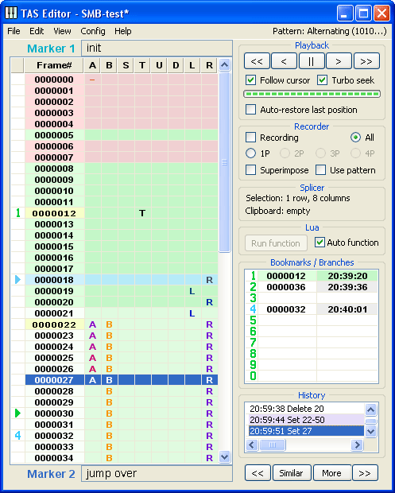
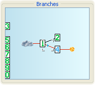
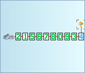

2.2. Toolbox
Toolbox

The Toolbox consists of 7 sections:

The top section is allotted to the Playback controls. The Playback is the component of Taseditor dedicated to handle game emulation: keep it paused, replay in any direction, rewind to desired frame and so on. It allows to treat video games as straightforwardly as if they were regular video recordings, disregarding the interactivity element inherent to them.
There are 5 buttons at the top of the window.
The "||" button (pause/resume) is simple graphical analog of the Pause Emulation hotkey. When you click it, the game emulation either pauses or resumes. However, if your mouse has a middle button, it's easier to press it instead of clicking the "||" button, in this case you won't need to move the mouse cursor to the Playback section.
The ">" button (step forward / advance 1 frame) moves the light-blue cursor 1 frame down, forcing FCEUX to emulate one frame if necessary. You can either click that button or click and hold it to make several steps forward. This button's keyboard analog is Shift + Down. If your mouse has a wheel, it's easier to hold the right mouse button and scroll the wheel 1 step down instead of using the ">" button.
The "<" button (step back / rewind 1 frame) moves the Playback cursor 1 frame up, displaying the previous frame's events in the FCEUX window. You can hold the button as well, when you wish to go several frames back. This button has its hotkey Frame Rewind (mapped to Backspace key by default), and has a keyboard analog: Shift + Up. If your mouse has a wheel, it's easier to hold the right mouse button and scroll the wheel 1 step up instead of using "<" button.
The "<<" button (fast rewind) also moves the Playback cursor back, just not by 1 frame but by multiple frames at once. This button moves the light-blue cursor to the frame where the nearest upper Marker is located. In the above picture, if you press the "<<", the light-blue cursor will jump to frame 12 (where the Marker 1 is set). Using this button you may quickly go back to the beginning of the edited segment or to any other past moment of the movie. The keyboard analog for this button is Shift + Page Up. You can also hold it – the light-blue cursor will rapidly jump on Markers up in the Piano Roll, and in the meantime you can look for the desired fragment of the movie by watching FCEUX screen.
The ">>" button (fast forward) jumps on Markers forward. In the above picture, if you press the ">>", the light-blue cursor will jump to frame 22 (where the Marker 2 is located). With this button you can rapidly skip to the game events forward in the movie. But in case the next Marker is out of the Greenzone range, emulator would need some time to process the unknown frames, so such jump may take some time. This button's keyboard analog is Shift + Page Down. You can click and hold this button as well.
As an experiment, try to make a test movie of about 1000 frames in size and set a dozen of Markers, one per every 30-50 frames. Then hold Shift and tap some Page Up / Page Down keys to feel the convenience of the fast scrolling. Alternatively you can roll the mouse wheel while holding the Shift key.
Below these 5 buttons you can see a progress bar and three checkboxes.
The Progress bar helps to estimate the time needed for Playback seeking. Immediate jumps to any frame are only possible after FCEUX emulated the game up to the target frame by applying your movie as a game Input to get the actual game state for the frame. After the actual game state was rendered at least once, it is saved into the Greenzone, so next time the emulator can instantly jump to that frame, granted that Input above the frame didn't change. If the Input was changed, a new emulation attempt is required, because even the smallest change in buttonpresses may cause serious changes in the gameplay chronology. Thus after every such change the Greenzone is automatically truncated, removing the data of all those frames that might be affected by the new Input. These frames must be emulated again, and it takes some time.
So, when you send the Playback cursor to a frame far from the Greenzone, instead of immediate jump the light-blue cursor starts seeking to that frame. A shadow of the light-blue cursor will be blinking at the target line of the Piano Roll, and the game images on the FCEUX screen will rapidly change as the Playback cursor runs to the target.
In this case you'll have to wait. The seek time depends on the distance between the target frame and the end of the Greenzone, on your computer power and a few other factors. The progress bar helps to estimate the waiting time. If you don't want to wait, left-click on the progress bar (in addition to being an indicator, it's also a button) or use the Cancel Seeking hotkey (Esc by default). Then the target frame will quit blinking, the light-blue cursor will stop and the emulation will be paused.
While Playback is seeking you may change the target by clicking on the desired frame row in the icons column of the Piano Roll. If you pause the emulator during seeking, the light-blue cursor will freeze and the target frame blinking will slow down, but the seeking won't be cancelled – when you unpause, the Playback cursor will continue running to the target and stop automatically after hitting it.
This Progress bar is also used when loading and saving Taseditor project files to disk.
The "Turbo seek" checkbox allows to change the seeking speed. When the Turbo is on, FCEUX emulates the game on the highest speed possible, reducing the seeking time tenfold. So, if you seek to a distant frame, check that option. But during the TASing process its often necessary to see all the intermediate frames, not just the last one. In such cases you should uncheck the checkbox and maybe even slow down the emulation with the - and = hotkeys to ensure you're not missing any important detail of the gameplay.
The "Follow cursor" checkbox forces the Piano Roll to follow the movement of the Playback cursor and autoscroll the view so that the light-blue cursor is always visible. This allows you to observe the Input played back when the emulator is unpaused. But when you edit the movie you should uncheck this option to prevent the Piano Roll from running away from the edited spot.
The "Auto-restore last position" checkbox makes the Playback automatically start seeking when the Playback cursor was moved back by the Greenzone. Every time you change an Input, the Greenzone is truncated after the first changed frame, forgetting old events that became irrelevant after that change. The Playback cursor must always be inside the Greenzone, so it steps back along with it. With the auto-restore checkbox you can instantly see new events on these frames. When the checkbox is checked, any Input modification triggers the replaying of the changed segment, helping you to compare different scenarios of the game events.
Thanks to auto-restore, TASers can focus on Input editing and rapidly go over many approaches to playing current segment of the movie. This method of TASing will be described later.

Below the Playback you can find the Recorder section. The Recorder is used to record buttons Input from keyboard (or gamepad) into the movie, just like in regular playing using any emulator.
The "Recording" checkbox turns the Recording mode on and off. Before you start recording any physical keypresses, make sure the Playback cursor is on the frame you want to record from. Then either press the "Toggle Read-only" hotkey (Q key by default), or click the Recording checkbox. The word "Recording" will appear in the TAS Editor window caption, and the message "Movie is now Read+Write" will appear on the FCEUX screen. Now you can either unpause the emulator and play the game normally, or type the buttons frame-by-frame using the Frame Advance hotkey. As the playback goes forward, the movie will fill with the data on the buttons you press.
You may rerecord the same segment of the movie multiple times, overwriting the old button log with new buttonpresses data. If you don't like how a segment was played (e.g. the character fell into a pit), put the Playback cursor before the frame where you made wrong buttonpresses (e.g. the A button was pressed too late) and resume Recording, this time pressing buttons properly.
When the segment is ready, turn the Recording mode off to prevent accidental erasing of the Input when replaying the movie. Uncheck the checkbox by mouse click or via the hotkey. When TASing in Taseditor, the Recording checkbox is usually unchecked, because direct Input editing is preferred to Recording.
It's recommended to rationally combine the Recorder features with those of the Piano Roll. For long and easy segments of the game it may be convenient to record buttonpresses from the keyboard or a handy USB-gamepad, but for small dislocated edits the mouse is way better.
The "Superimpose" checkbox in the Recorder section allows to combine the existing Input with the newly recorded data on the same segment of the movie. For example, you can draw the R buttonpresses on rather long segment with a single mouse stroke, to make the character run right. Then you can enable the "Superimpose" option, turn on Recording and play the game by pressing only jump and shoot buttons, without the need to hold Right. The character in the game will still run right, jumping and shooting on command.
Unlike other checkboxes, the "Superimpose" option has three possible states. In addition to "enabled" and "disabled" it can also be in an interim state between these two. The third state works like this: when the player presses some gamepad buttons during Recording, these buttons are recorded in place of old Input. But if the player presses no buttons during Recording, the old Input on these frames is not overwritten.
The "Use pattern" checkbox applies current pattern to the process of buttons Recording. The name of the current pattern can be seen in the upper right corner of TAS Editor window (the last item of the main menu). If you click this menu item, a pop-down menu will appear, allowing you to choose another pattern from the list.
Patterns are used to speed up the process of entering monotonous buttonpresses and releases. For example, when you need to shoot at maximum rate (that is, alternate 1 frame of pressing B and 1 frame when B is released), you can just choose the "Alternating (1010...)" pattern and hold the B button without caring about manual mashing. Thanks to the pattern, the B buttonpresses will be recorded only for every other frame.
Besides the checkboxes the Recorder section also contains radio buttons that implement the multitracking feature.
Multitrack Recording greatly simplifies the traditional method of TASing games made for 2 or more players. Instead of pressing buttons of both gamepads at once, you can record a short segment of controlling the Player 1 and then record actions of Player 2 on the same segment of the movie.
By default the Recorder is set to recording "All" pads. You can choose a single pad by clicking the respective radio button ("1P", "2P", etc – the number of available gamepads depends on your project type). You can also use the "Switch current Multitracking mode" hotkey (W key by default). Now during the Recording the emulator will accept only the chosen player's buttonpresses, and the Piano Roll columns for other pads won't change even if you accidentally press another player's buttons.

The Splicer section comes after the Recorder. It's dedicated to displaying the most necessary data used in non-linear editing of the movie.
Despite the similar sounding, editing TASes is totally different from using a non-linear video editing software, because Taseditor only allows you to edit Input, not the finished video footage (Output). The resulting video stream is built by the game itself.
In this section you can see the information on current Selection size: how many rows and columns are covered. With this info you can use the Selection as a measuring scale (ruler). E.g. to find the temporal distance between two in-game events, click the frame of the first event and stretch the Selection to the frame of another – all those frames will be selected, and in the Splicer section the message "Selection: N rows, M columns" will tell you the number of frames in question.
Also, here is the info about the Clipboard contents: whether it contains an Input that could be pasted to any place in the movie. When an Input is copied to the Clipboard, this line displays total amount of frames copied. The Clipboard data is stored independently of Taseditor, and it's kept there even after you close FCEUX, until some other application copies its own data to the Clipboard.
The "Splicer" section has no controls, because all Input splicing commands are kept in the Edit menu item and are assigned with accelerator keys. In actual TASing process it's recommended to use the keyboard combinations, because they're easy to remember and the working speed increases immensely.
The list of all Editing functions
Basically, these are the standard functions of any text editor, but in Taseditor they can be applied to Input in the middle of emulation, which allows to analyze the results on the fly and flexibly tune your plans.
- Copy (Ctrl + C) – copies the Input of all selected frames to the Clipboard.
- Paste (Ctrl + V) – pastes the Clipboard contents into the movie, starting from the position of the Selection cursor. Old Input data on the frames is replaced by the new data, or combined together if the "Superimpose" option in Recorder section is checked.
- Paste Insert (Ctrl + Shift + V) – expands the movie and inserts the Clipboard content at the position of the Selection cursor. Old movie data is shifted down.
- Clear (Delete) – clears selected frames, removing all buttonpresses from them.
- Cut (Ctrl + X) = Copy + Clear – copies Input from the selected movie segment and clears the segment.
- Delete (Ctrl + Delete) – removes selected frames from the movie, shifting all the following frames up in their place. A handy way to move Input up.
- Insert (Ctrl + Shift + Insert) – inserts blank frame into the movie before every selected frame, shifting existing Input down. A handy way to move Input down.
- Clone (Ctrl + Insert) – similar to Insert, but instead of blank frames it inserts a copy of selected frames. Usually this is the preferred way of moving Input down.
- Insert number of frames (Insert) – allows to insert any number of frames at the position of the Selection cursor. When you press the Insert key, a small window pops up and prompts you to enter the number of frames to insert. Type the number and click OK. If you change your mind, press Cancel (Esc) to hide the window.
- Truncate – removes all frames of the movie, starting from the frame next to the Selection cursor. It's a rarely used function, so it has no hotkey, it's only available through the main menu or by the right-click.
When TASing in Taseditor you're going to most often use Ctrl + Delete (Delete Frames) and Ctrl + Insert (Clone Frames) to quickly move edited segments up/down in the frame list, thus performing certain in-game actions sooner or later.
Unlike FCEUX hotkeys, these key combinations can't be changed, so if you have some other emulator functions assigned to Ctrl, Insert or Delete, you'll have to change emulator settings.

Under the Splicer you can see a small Lua section.
There is one inactive button and one checkbox here, their purpose will be described later. While you're not familiar with Lua scripting, you won't need this section.
The Lua scripting language allows to automate some part of TASers' work and to create your own plug-ins for Taseditor.

Then goes the Bookmarks/Branches section. We should speak of Bookmarks at a greater length here.
Bookmarks are the evolution of emulator savestates. Before Taseditor the savestates were the main way to navigate the movie, with their help TASers return back to the place of a mistake and fix it. In Taseditor there are better navigation methods, but this one was left too.
You have 10 slots for Bookmarks in your disposal. These are numbered with digits from 0 to 9. You can set any of 10 Bookmarks to any movie frame, pointing to that frame with the Playback cursor beforehand.
Example 1. Set the light-blue cursor to the frame you want a Bookmark at, and make an emulator savestate (Shift + F1-F10 by default). For example, press Shift + F1 to set the first Bookmark. It will appear in the Bookmarks List, flashing one time with the red light.
Example 2. Set the light-blue cursor to the needed frame and right-click on any line in the Bookmarks List. For example, right-click on the line 2 to create the Bookmark in slot 2.
You can undo the Bookmark set operations with Ctrl + Z.
The Bookmarks List displays the frame number where each Bookmark is sat, and the real time of setting the Bookmark. If you hover the mouse cursor over a Bookmark's time (the right column in the List), you'll see the screenshot from the game.
When setting a Bookmark, Taseditor saves to the chosen slot the data about the Playback cursor position and entire movie contents. Now at any time you can either make a "spatial jump to the Bookmark" (simply returning the Playback cursor to the bookmarked place), or make a "temporal jump to the Bookmark", returning the whole movie to the state saved in the Bookmark slot.
To jump to a Bookmark in space, left-click on the left half of the needed Bookmark (the pale-colored half of the Bookmarks List where the frame number is displayed). Or use the keyboard – press the corresponding number key (numeric keys 0-9 are under the F1-F10 keys). You can notice the jump by seeing the light-blue cursor movement in the Piano Roll and by green flash in the Bookmarks List.
To jump to a Bookmark in time, left-click on the right half of the needed Bookmark (the brighter-colored half of the Bookmark List where the time is displayed). Or load the corresponding emulator savestate (keys F1-F10 by default). If any Input was changed during this jump in time (since it returns to its state at the time of creating the Bookmark), the Bookmark flashes with blue color, otherwise it flashes green, like in a simple Playback cursor jump. As usual, when an Input changes, the Greenzone truncates automatically. And of course you can undo the change using Ctrl + Z to revert the movie to its state before the time jump to the Bookmark.
So, part of the Bookmarks may be used to speed up your movie navigation. For example, set a Bookmark at the beginning of current game level to be able to return the Playback cursor to that frame and replay the level events anytime. You could use a Marker for the same purpose, but the advantage of the Bookmarks is that you can instantly jump to a Bookmark from any remote segment of the movie, no matter how many Markers are set in between, while to reach the desired Marker you would have to jump on the neighbor Markers.
Another part of the Bookmarks can be used to store alternative approaches to playing the same game segment. When TASing complex games we can't always immediately evaluate the optimality of a playing strategy. Sometimes TASer needs to record several different versions of playing the same segment and then carefully compare the resulting movies, choosing the most appropriate one to be left in the final TAS.
In traditional TASing every such movie is kept in separate file, so to switch between the alternative movies (or rather between alternative branches of your main movie) you need to load corresponding savestates created when recording these playthroughs.

In Taseditor all saved branches of the movie are held together, forming the hierarchy called the Branches Tree. To switch between the alternative branches you need to load the corresponding Bookmark, thus returning the working movie to one of the prepared versions. Basically, it's the same as before. But now we can visualize all alternative playthroughs in a graph scheme to facilitate TASer's comprehension of the multitude of options.
When you test a couple of approaches to playing the 2nd level of the game, the 1st level playthrough remains the same in both branches, so the discrepancy of the Input starts not from the beginning, but from the 2nd level. So, if you left the Bookmark 1 before the beginning of the 2nd level, you'll see the fork in the graph starting from the card 1.
As an experiment, create a new project and make a very short movie. Then set the Playback cursor to the end of existing Input and save a Bookmark into the first slot (Shift + F1). Advance a few frames after that Bookmark and draw some buttonpresses, then play this new Input and save to Bookmark 2 (Shift + F2). Now return the movie to the first Bookmark state (press F1) and add some buttonpresses after the bookmarked frame again, but make sure they are different from the last time. Play this new Input to the end and save the 3rd Bookmark (Shift + F3) or any other.
Now click on the header of the Bookmarks section ("Bookmarks/Branches" label). The Bookmarks List view will change to the Branches Tree view. If the third Bookmark movie differs from the second Bookmark movie, and the difference starts after the first Bookmark frame, you'll see the picture similar to the above. The cloudlet symbolizes the beginning of the movie (the root of the hierarchy). Bookmarks are presented with cards of corresponding numbers. The blue-colored number stands for the current Bookmark containing the branch that corresponds to working movie (currently displayed in the Piano Roll). If the working movie was changed after saving/loading this Bookmark, you'll see the fireball descending from the current Bookmark.
Red lines connect those Bookmarks that are compatible with the chronology of current working movie. For example, if you set one Bookmark at the end of every level, all such Bookmarks will be sitting on one red line, because the movie of every next Bookmark is actually composed from the movie of previous Bookmark plus an additional level playthrough.
The Branches Tree also displays current Playback cursor position. Try dragging the cursor in the Piano Roll up and down, or just play the whole movie back (press Shift + Home and unpause the emulator). You will see how the light-blue arrow pointer rides on red lines that connect all Bookmarks of the current timeline. E.g. if the current branch is the Bookmark 2, the pointer will ride that route: "cloudlet -> Bookmark 1 -> Bookmark 2". And the other Bookmarks will be left aside, because they represent an alternative timeline, conflicting with the currently played movie.
The Branches Tree is automatically rebuilt each time you create a new Bookmark or change an existing Bookmark's contents. Depending on how complex your project is, the graph may appear differently.
|
|
|
|
|
|
|
 |


You can hover the mouse cursor over any Bookmark number to see some info about it.
Also you can make a single left-click on any Bookmark card to send the Playback cursor to the bookmarked frame (spatial jump). By clicking the cloudlet you send the Playback cursor to the beginning of the movie (equal to pressing Shift + Home), and by clicking the fireball you send the Playback cursor to the end of the movie (equal to Shift + End).
Besides, you can double-click a Bookmark by the left mouse button to jump to the Bookmark in time. The working movie reverts to the Bookmark's state, the Bookmark becomes current branch and the Playback cursor moves to the Bookmark frame.
Finally, you can right-click any card to save the current movie state and the Playback cursor position to the chosen Bookmark.
As you see, the Branches Tree view supports the same functionality as the Bookmarks List view does. Thus it's recommended for advanced users to stick to the Branch Tree view, because it provides more info for a TASer. When you want to switch back to the Bookmarks List view, click the section header again (the "Branches" label).
Now try using all 10 available slots. Each time slightly change the current movie Input and watch the changes on the FCEUX screen before saving them to a Bookmark. The position of each card on the Tree is defined by the Input preceding the bookmarked frame. It's implied that TASer always watches the edited Input segment in the emulator, and only then saves the tested work into a Bookmark.
In hands of an experienced TASer Bookmarks become very powerful tool, allowing to greatly simplify the TASing process and implement ideas that look impossible. Usually, an idea is labeled "impossible" only due to its monstrous unbounded complexity. But lower the complexity a hundred times (with the help of tools and a smart process organization), and the achievement moves from the "impossible" category to just "hard" one.

The History section is located below the Bookmarks.
Taseditor keeps strict accounting of all operations in the current project. Every user's action that changes an Input, Markers or Bookmarks is recorded to the log displayed in this section.
The current item of the History Log is highlighted blue. Other items have white background if they aren't related to the current item, or purple background if they represent the changes made in the same place as the current item. For example, if current History Log item was created by changing the Input of frame 27, all other items affecting that frame will be highlighted purple.
To undo logged operations you can either use the Ctrl + Z and Ctrl + Y keys, or simply click any line in the History Log with the left mouse button, thus returning the movie to the time when the clicked item was created.
You may notice the purple cursor line appearing in the Piano Roll for a short moment. It's supposed to stress your attention on the place of the undone changes.
The maximum number of undo levels can be set in the Config menu, that value defines the maximum size of the History Log and therefore the amount of used memory.
The full list of all possible records in the History Log can be found in the Reference.

At the very bottom of the Toolbox there are 4 buttons controlling the Selection cursor.
The meaning of the "<<" and ">>" buttons can be easily guessed by analogy with the upper "<<" and ">>" buttons in the Playback section. The upper part of TAS Editor window contains the Playback cursor-related elements, and the lower window part contains Selection cursor-related elements.
The "<<" button (jump back) moves the Selection cursor to the frame where the nearest upper Marker is located. In the above picture it will jump from frame 27 to frame 22 where the Marker 2 is set. Using this button you can quickly return the selection to the beginning of the edited segment or to any marked segment. This button has its keyboard analog: Ctrl + Page Up. You can hold this button to let the dark-blue cursor rapidly jump on Markers up in the Piano Roll.
The ">>" button (jump forward) moves the Selection cursor to the nearest marked frame below it. In the above picture it will jump from frame 27 to a frame outside the visible area (where the next Marker is set), and Piano Roll will automatically scroll after the Selection cursor. Using this button you can quickly navigate down through the movie. This button has its keyboard analog: Ctrl + Page Down. You can hold this button as well.
Since the Selection cursor isn't tied to the game emulation, its jumps on Markers always happen instantly, regardless of the Greenzone presence on the target frame. So it's useful to read the Marker Notes one by one this way, watching them in the lower edit field and pressing Ctrl + Page Down to make an instant jump to the next Note. Besides Page Up / Page Down keys you can roll the mouse wheel while holding the Ctrl key.
The buttons "Similar" and "More" are used for searching similar Notes. This is another experimental feature of Taseditor, and it will be described later.
Now you are familiar with fundamental principles of the program usage.
In the next chapter: systematic approach to TASing.
|
PRACTICE: Beat the World 1-1 in Super Mario Bros (or any other game) using only the mouse, without Recording. No need to do a speedrun, just make yourself familiar with the routine of Input drawing / erasing and watching the results using the mouse wheel / middle mouse button. Estimated time: 20-30 minutes. |
Created with the Personal Edition of HelpNDoc: Easy EBook and documentation generator